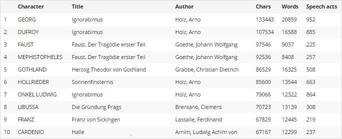
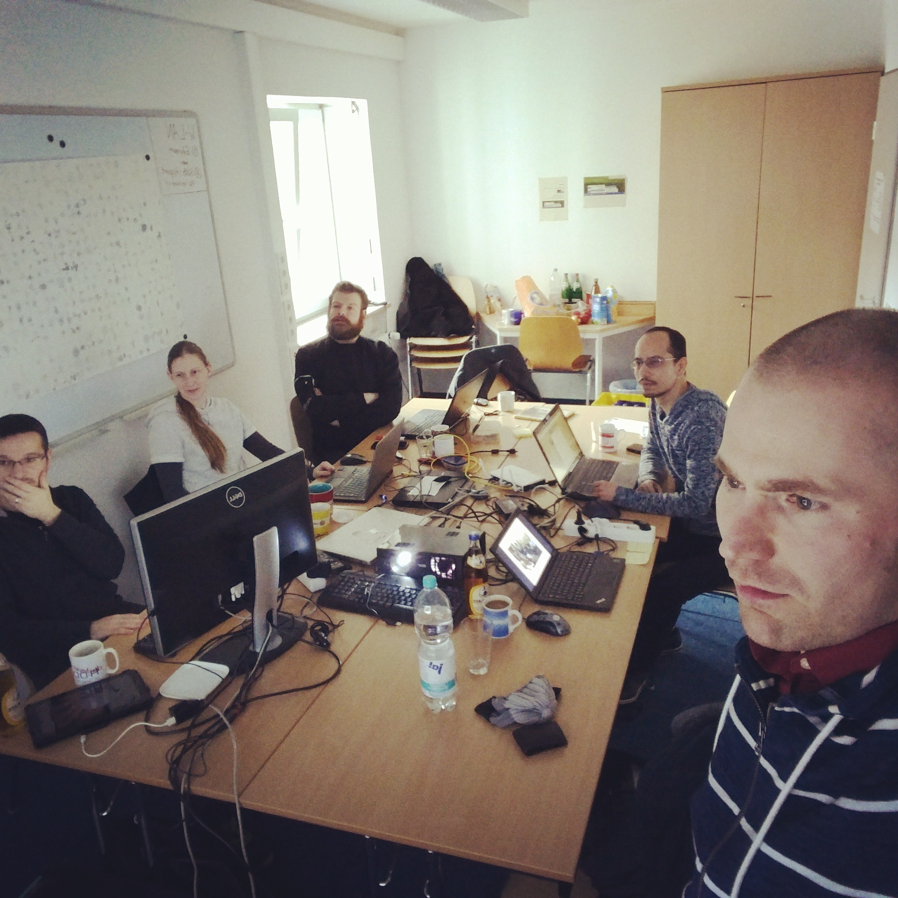
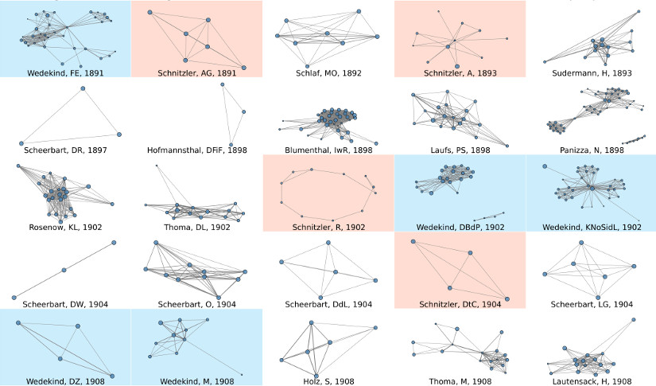

»Distant-Reading Showcase«
Datennarrative in den Geisteswissenschaften
Frank Fischer
National Research University Higher School of Economics · Moscow
- E-Mail: ffischer@hse.ru
- Github: lehkost
- Twitter: @umblaetterer
- Blog 1: weltliteratur.net – A Black Market for the Digital Humanities
- Blog 2: Network Analysis of Literary Texts
DH-Kolloquium · CCeH, Universität zu Köln · Do, 23. Juni 2016
Das Poster: »Distant-Reading Showcase«

465 Figurennetzwerke aus 200 Jahren dt. Dramengeschichte auf einen Blick.
Präsentiert auf der DHd, 9. März 2016, Leipzig. – DOI: 10.6084/m9.figshare.3101203.v1.
Kapitel
- Netzwerkanalyse literarischer Texte
- Was ist Distant Reading?
- Datenvisualisierung mit Edward Tufte
- Ein Datennarrativ: Das Poster
1. Netzwerkanalyse literarischer Texte
DLINA-Arbeitsgruppe (1/3)
- DLINA = (Digital) LIterary Network Analysis
- Beiträger_innen (alphabet.): Frank Fischer, Mathias Göbel, Dario Kampkaspar, Christopher Kittel, Hanna-Lena Meiners, Peer Trilcke, Andreas Vogel
- Plattformen:
DLINA-Arbeitsgruppe (2/3)
- Korpora unter Beobachtung (alle in TEI):
- TextGrid Repository (666 deutschsprachige Dramen und Libretti von 1500 bis 1930)
- Dramawebben (68 schwedischsprachige Dramen)
- theatre-classique.fr (852 französischsprachige Dramen)
DLINA-Arbeitsgruppe (3/3)
- DLINA-Arbeitskorpus (15.07 »Sydney«):
- entstanden auf Basis des TextGrid Repository und stark korrigiert
- 465 deutschsprachige Dramen (1731 bis 1929)
- zur Zusammensetzung siehe den Blogpost Introducing »dlina Corpus 15.07«
Analysemethoden (1/4)
Beispiel: Lessings Emilia Galotti (1772)


Analysemethoden (2/4)
Skit: Die größten Plaudertaschen des deutschen Dramas
Vgl. Blogpost »The Biggest Chatterbox in German Literature«.
Analysemethoden (3/4)
Network Size (Median), jahrzehntweise (1730–1930):

Vgl. Blogpost »200 Years of Literary Network Data«.
Analysemethoden (4/4)
Network Density (Mean) per Genre und Jahrhundert:

Vgl. Blogpost »Comedy vs. Tragedy: Network Values by Genre«.
Datenanreicherung & -korrektur
»Play(s)«-App von Mathias Göbel und Hanna-Lena Meiners. Im Google Play Store.
2. Was ist Distant Reading?
Die berühmte Stelle
»[…] if you want to look beyond the canon […], close reading will not do it. It’s not designed to do it, it’s designed to do the opposite. […] we know how to read texts, now let’s learn how not to read them. Distant reading: where distance […] is a condition of knowledge […].«
Franco Moretti: Conjectures on World Literature. In: New Left Review 1 (2000).
Distant Reading, ist es …
- … »a joke«?
- … ein polemischer Begriff, ein Buzzword?
- … eine computerbasierte Methode zur Analyse von Literatur?
- … Morettis Versuch einer kanonkritischen, korpusbasierten Literaturgeschichte?
- … ein gescheitertes oder zumindest beendetes Projekt?
Mehr dazu:
- Peer Trilcke, Frank Fischer: Distant Reading With Foucault? Thoughts on the Practice of Distant Reading and on the Operationalisation of Discourse Analysis. In: Foucault-Blog, 26. April 2016. DOI: 10.13095/uzh.fsw.fb.141.
- englische Zusammenfassung: weltliteratur.net/Distant-Reading-with-Foucault/
Von Zahlen zu Bedeutung
»The general methodological problem of the digital humanities can be bluntly stated: How do we get from numbers to meaning? The objects being tracked, the evidence collected, the ways they’re analyzed—all of these are quantitative. How to move from this kind of evidence and object to qualitative arguments and insights about humanistic subjects—culture, literature, art, etc.—is not clear.«
Ryan Heuser u. Long Le-Khac: A Quantitative Literary History of 2,958 Nineteenth-Century British Novels: The Semantic Cohort Method. (= Pamphlets of the Stanford Literary Lab, Nr. 4.) Mai 2012, S. 46.
New Distant Reading!
- Arbeitskorpus ausführlich beschreiben und zur Verfügung stellen, Normdaten einbinden.
- Über Code reden, über Pre-Processing reden.
- Theoretisch gedeckelter statt intuitiver Zugang zu Inhalten.
3. Datenvisualisierung mit Edward Tufte
Tuftes Visualisierungs-Kompendien
- The Visual Display of Quantitative Information (1983, 2nd edition 2001)
- Envisioning Information (1990)
- Visual Explanations (1997)
- Beautiful Evidence (2006)
Charles Joseph Minard: »Carte figurative …
… des pertes successives en hommes de l’armée française dans la campagne de Russie 1812–1813« (1869)

Quelle: Wikimedia Commons.
{kind=link}
Dimensionen der »Carte figurative«
- geografisch: Karte mit Einmarsch und Rückzug der Deuxième Grande Armée (beige bzw. schwarz), inkl. Teilung und Zusammenschluss von Einheiten
- Durchmesser als Indikator für abnehmende Truppenstärke
- zeitlicher Verlauf
- Temperaturdiagramm
Zu Tuftes Grundsätzen
- »induce the viewer to think about the substance rather than about methodology, graphic design, the technology of graphic production, or something else«
- »present many numbers in a small space«
- »encourage the eye to compare different pieces of data«
- …
- Data-Ink Ratio
- »Above all else, show the data.«
Vgl. The Visual Display of Quantitative Information, 2nd edition [2007], S. 13 u. ö.
4. Ein Datennarrativ: Das Poster
»Mapping Shakespeare’s Tragedies«

Martin Grandjeans Netzwerkvisualisierung für 6 (von 11) Shakespeare-Tragödien (Dezember 2015). Vollständiges Poster und Erläuterung auf der Website von Grandjean. Sein Vorgehen ist kaum automatisiert (vgl. das Interview mit PBS.org vom 22. April 2016), ungeeignet für Distant Reading.
Poster-Hackathon
23.–25. Februar 2016, SUB Göttingen.
dramavis (Kittel/Fischer 2014ff.)
- Python 3, NetworkX als Netzwerkanalysebibliothek
- nimmt XML als Input (im DLINA-eigenen Zwischenformat, für das wir Parser zur Verfügung stellen)
- generiert u. a. das Superposter (als SVG)
- berechnet Graph-Metriken inkl. random graphs und konvertiert das eingelesene XML in weiterverwendbare CSV-Dateien (z. B. für Gephi oder Cytoscape)
- Sourcecode: github.com/lehkost/dramavis
Déjà-vu 1: »Distant-Reading Showcase«
465 Figurennetzwerke aus 200 Jahren dt. Dramengeschichte auf einen Blick.
Präsentiert auf der DHd, 9. März 2016, Leipzig. – DOI: 10.6084/m9.figshare.3101203.v1.
Detail 1

Im Fokus: Goethes Götz von Berlichingen (1773).
Detail 2
Im Fokus: Schnitzler Reigen (1902), vgl. Gerrit Imsiekes Tweet.
Detail 3

Farblich hervorgehobene Autor_innen als chronologische Anhaltspunkte.
Déjà-vu 2: »Distant-Reading Showcase«
465 Figurennetzwerke aus 200 Jahren dt. Dramengeschichte auf einen Blick.
Präsentiert auf der DHd, 9. März 2016, Leipzig. – DOI: 10.6084/m9.figshare.3101203.v1.
Weekend Hack mit @goebel_m und @chris_kittel: theatre-classique.fr

842 Figurennetzwerke aus 250 Jahren französischer Dramengeschichte auf einen Blick (extrahiert aus den TEI-Dateien des »Théâtre Classique«-Projekts, siehe GitHub). Eingefärbt sind: Pierre Corneille, Molière, Racine, Crébillon, Voltaire, Euripide (negative Jahreszahlen). Demnächst mehr dazu.
<STRG+C>
Danke schön!
Frank Fischer
- E-Mail: ffischer@hse.ru
- Github: lehkost
- Twitter: @umblaetterer
- Blog 1: weltliteratur.net – A Black Market for the Digital Humanities
- Blog 2: Network Analysis of Literary Texts
(Präsentation mit reveal.js.)